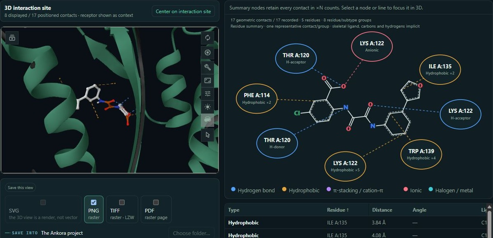
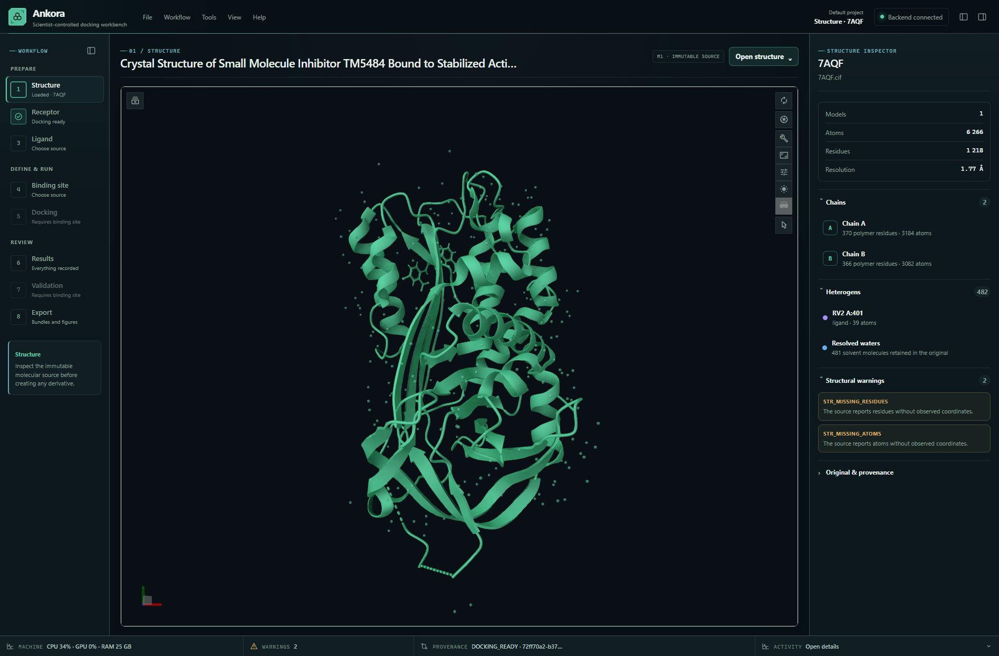
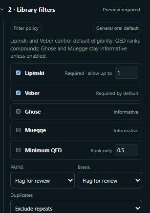

Filter before you minimize
Lipinski, Veber, Ghose, Muegge and QED. PAINS/Brenk alerts, duplicate detection and custom descriptor rules inform an explicit selection.
From a structure to a pose you can inspect. Prepare, screen and review in one local workbench — with every scientific decision visible.
Open source. Local computation. No separate scientific-tool setup for beta testers.

01 / THE WORKBENCH
Move from inspection to interpretation without losing the original structure, the chemical state or the choices that produced a result.
Open PDB/mmCIF files or retrieve a public structure. Inspect chains, waters, ligands and structural issues before making a derivative.

02 / VIRTUAL SCREENING
Clean and prepare a library before spending time on docking. Keep the selection, each chemical state and every failed molecule in the record.
Lipinski, Veber, Ghose, Muegge and QED. PAINS/Brenk alerts, duplicate detection and custom descriptor rules inform an explicit selection.
Inspect mass, SMILES, charge and stereochemistry. Generate ETKDGv3 coordinates, minimize with MMFF and write PDBQT with Meeko.
Bounded multicore preparation and molecule-level docking progress. Failures remain visible instead of disappearing from the campaign.

The imported library stays intact. Applied filters create a separate, recorded selection manifest.
03 / LOCAL EXECUTION
The same workbench, distinct scoring and search protocols. No merged score and no silent GPU-to-CPU substitution.
CPU · single ligand and library campaigns
Reusable AutoGrid4 maps · native clusters and runs
AutoDock4 scoring family · compatible OpenCL device required
GNINA is deferred in this beta. Vina scores and AutoDock4 energies are not interchangeable. GPU runs are not assumed bitwise reproducible.
04 / SCIENTIFIC EVIDENCE
A completed calculation is not a validated biological claim. Protocols, failures, near misses and ranking limitations stay in the public record.
Frozen retrospective records. Ligand-state comparability and historical Vina RMSD gaps are disclosed.
One preregistered receptor/ligand lineage. Near misses and unrecovered GPU runs retained alongside CPU recovery and misranking.
11,412 frozen parents across three targets. Modest retrospective ranking signal, with uncertainty and all unscored parents retained.
Docking scores are not experimental affinities. Interaction diagrams describe geometry, not binding or activity. These cases do not establish prospective performance or generality across targets.
Read the full evidence ↗05 / START EXPLORING
A real 7AQF/RV2 walkthrough, recorded methodology and an open codebase. Start with the guide; follow the evidence further.
From structure inspection to pose interactions, with 19 actual figures and explicit scientific cautions.
Open the PDF ↗CODE / MITInspect the implementation, architecture decisions, provenance contracts and development instructions.
Explore the repository ↗RESEARCH / CITATIONName the exact version or commit and the scientific tools used. Record-derived Methods keep missing information visible.
View citation metadata ↗CURRENT DISTRIBUTION / PRIVATE BETA
Ankora is currently shared with invited Windows 11 x64 testers. The complete installer includes the scientific runtime and supported tools; there is no public installer release yet.
Ask about the betaThe beta is unsigned. Follow your institution's software policy; do not disable system security. GPU drivers remain the hardware vendor's responsibility.
Not for the complete beta installer. It includes a private scientific Python runtime, Java, preparation tools, docking engines, P2Rank and offline WebView2. Public structure downloads still need internet access.
Preparation and docking run locally. Ankora has no telemetry or automatic cloud upload. Retrieving a structure from RCSB or AlphaFold is an explicit network action. Separately, this website uses a third-party visitor counter, explained in the footer; it receives no scientific data from the application.
Not an accepted release yet. Windows 11 x64 is the authoritative beta platform. Other platforms must pass their own packaging and scientific checks before support is claimed.
Ankora's code is available under the MIT license. Bundled third-party components retain their own licenses, notices and corresponding-source obligations. Cite the software and tools you use in published research.